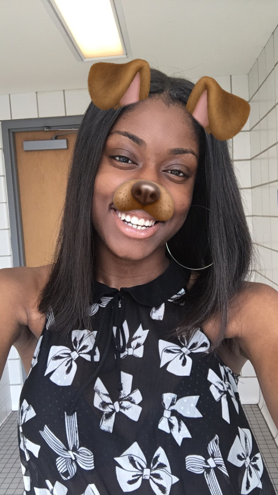
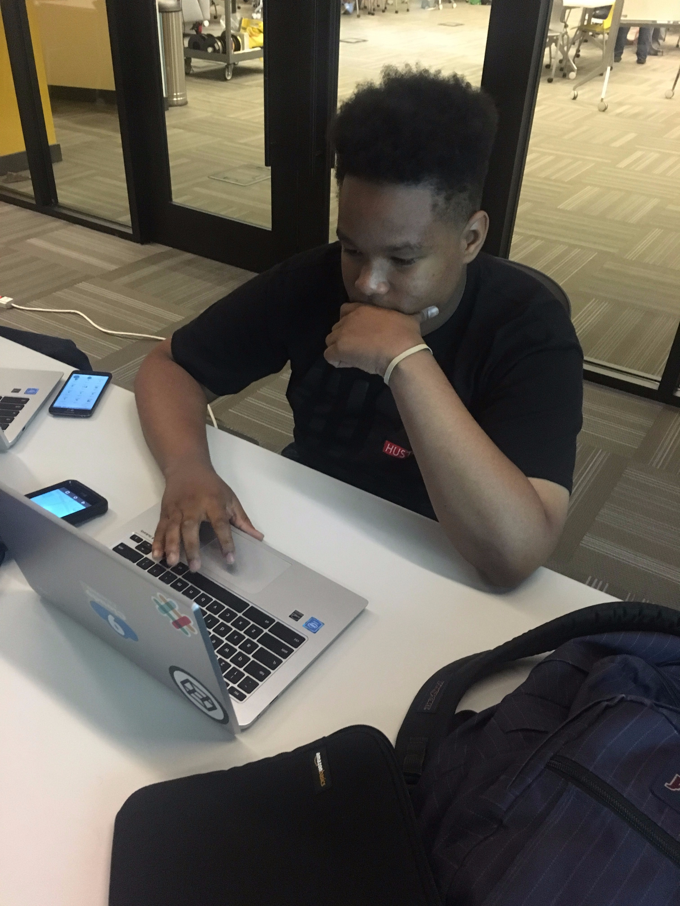
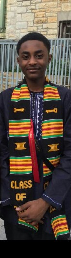
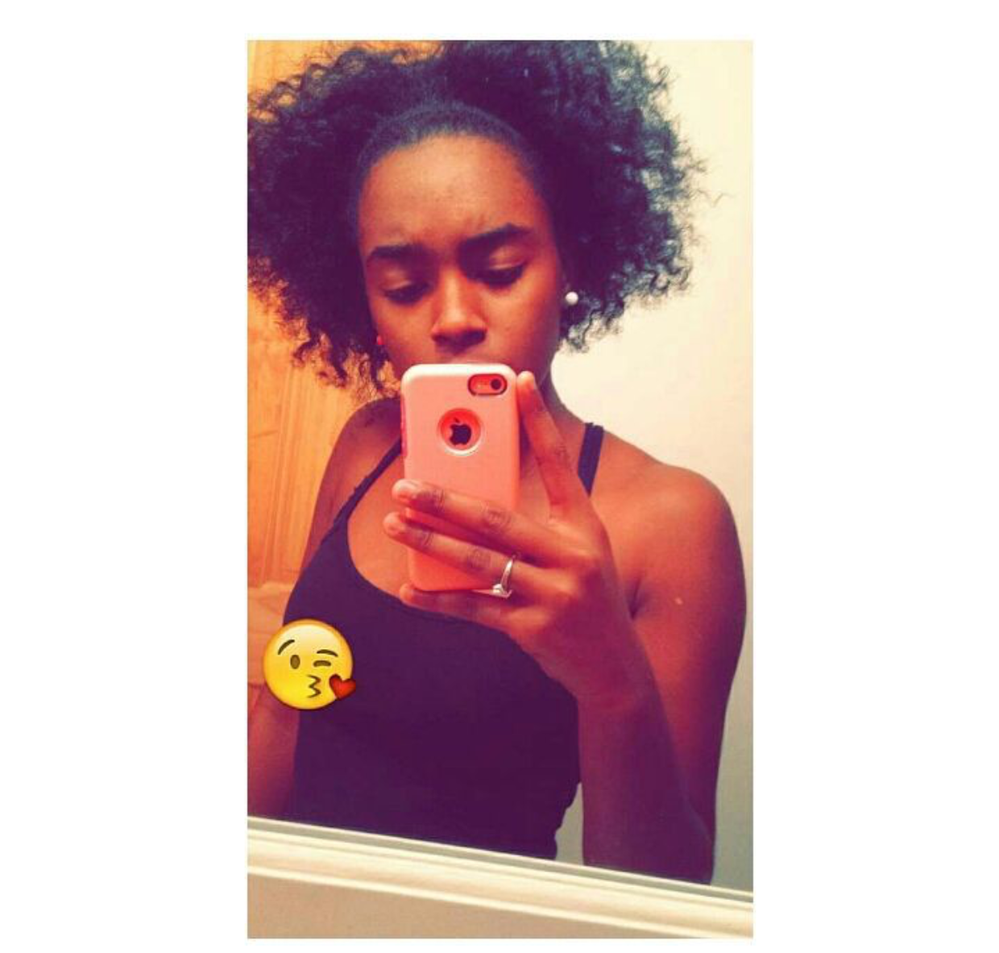

Neeco is a young man that has a dream of becoming a game designer when he grows up. Neeco is attending UCW at the momment. He started to attached to gaming when he was 2 years old. He started beating them at that same age. As he grew up he wanted to make them as well as play them. His mother told him about a thing called CoderSpace. So he asked does that have anything to do with game designing she said yes. So he looked into coding more.
Hello, my name is Latasha and I currently attend Jones College Prep. While maintaining an athletic career as a varsity track sprinter, I have continued to strive for excellence in both my academics and extracurriculars. Recently, I have been selected to attend the 2017 Presidential Inauguration as a result of my outstanding grades and dedication to the field of science and technology. Also, I am a founder of a creative club at my school called The Positivity Club that embodies community service. Coming from a lower class family with little college experience, I hope to get the opportunity to run collegiate track to honor all of the sacrifices my family has made for me. My hard work ethic will bring leadership, teamwork, and motivation to everything I try to accomplish. Sprinting is my passion and I dream of running at a college level.Latasha's personal website
My name is Brian Foxx Jr., and my favorite subject in school is Geometry. One of the activities I participate in at school is football. I do not have a part time job, and I do not currently volunteer for anything. This school year, I was recognized for being one of three students in the sophomore class at my school to get a top score on the International Baccalaureate Personal Project. My score was a 7/7. For my Personal Project, I built a computer. My favorite hobby is working with computers. I really enjoy building them. Anything that deals with technology is of interest to me. I am most passionate about computers and computer science, so this is why I would love to learn coding. My career goal is to work in the field of technology.Brian's personal website
My name is Tyresha Mitchell and I am currently seventeen years old. I am a STEM technology student at Chicago Vocational Career Academy. I enjoy dancing, writing, and computer literacy. As a STEM IT student, I have been able to participate in a variety of technology programs including the Motorola Solutions challenge. As the project manager for the Motorola Solutions Challenge, our group was able to successfully identify a problem and its solution and verbally present our data to IT professionals at Motorola Our challenge project taught us many things. Through research, hard work, and endurance we were able to compete and win second place for our project. I also enjoy dancing and listening to music. As a dancer, I participated in many dance competitions and I performed in the Bud Billiken Parade. As a student, project manager, and dancer my Chicago Vocational High School experience is fuller. I’ve learned patience, empathy, endurance, and resilience. All which will help me to successfully achieve academic and career goals. Sincerely, Tyresha Mitchell STEM IT Tyresha's personal website
   